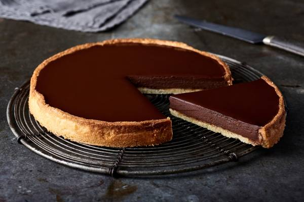
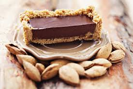
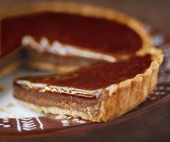

La tarte au chocolat qui tue
Onctieuse et caramélisée

La tarte au chocolat, c'est un peu le dessert de mon enfance. J'ai grandi au rythme des coups de fouets dans la cuisine, et aujourd'hui j'aimerai partager avec vous la recette de ce que j'aime appeler "mon petit bonheur"...
Pour préparer votre petit bonheur à vous, vous aurez besoin de:
- 150g de farine
- 150g de sucre roux
- 150g de beurre demi sel mou(ou de margarine végétale pou la version vegan)
- 60g de poudrre d'amande
- 200g de chocolat noir
- 400ml de lait de coco
- Un grand saladier
- Un récipient qui supporte la chaleur
- Un moule de la forme de votre choix
- Une casserole
- Un four
- Une spatule
- Un fouet
- Une fourchette
Les étapes de la préparation:
- Commencer par préparer vos ingrédients.
- Préchauffez votre fou à 200°C option chaleur tournante.
- Beurrez votre moule.
La pâte
- Dans le saladier, mettez la farine, le sucre, la poudre d'amande et le beurre mou.
- Formez une pâte avec vos mains. Cela peut prendre un peu de temps mais ne vous découragez pas. Si votre beurre est bien mou (attention il ne doit pas être fondu) ça devrait le faire.
- Une fois que la pâte forme une vraie boule lisse, tapissez le fond de votre moule avec. Vous pouvez y aller avec les doigts et les mains dans un premier temps, puis finir avec une spatule pour lisser le tout.
- Piquez votre pâte à l'aide d'une fourchette afin qu'elle gonfle le moins possible.
- Enfournez à 200°C pendant 20 minutes. Vérifiez de temps en temps que la pâte ne gonfle pas trop. Si tel est le cas, vous pouvez repiquer la pâte avec la fourchette.
La ganache
- Pendant que la base de la tarte cuit paisibelement, faites chauffer le lait de coco dans une casserole à feu doux. À côté, cassez vos carrés de chocolats dans un récipient qui supporte la chaleur.
- Une fois que le lait est bien chaud, versez le sur les carrés de chocolat.
- À l'aide d'un fouet, remuez doucement le mélange chaud. Avec la chaleur, les carrés devraient fondre progressivement au contact du lait. Petit à petit, la ganache de votre tarte va se former. Le mélange doit être onctueux et lisse.
Last steps...
- Une fois votre pâte cuite, sortez la du four et laissez là un peu reposer. Une fois qu'elle a un peu refroidie, versez votre ganache sur la base de la tarte. Avec une spatule, vous pouvez lisser la surface si elle ne l'est pas assez.
- Dernière étape: le figo. Mettez votre tarte au frais pendant 4 heures minimum, toute une nuit au mieux. Plus votre tarte reste au frais, le plus la texture sera solide et onctueuse.
- Dégustez en famille, entre amis ou même seul, tous les moments sont bons pour se faire un petit bonheur!
Vos productions de dingue

